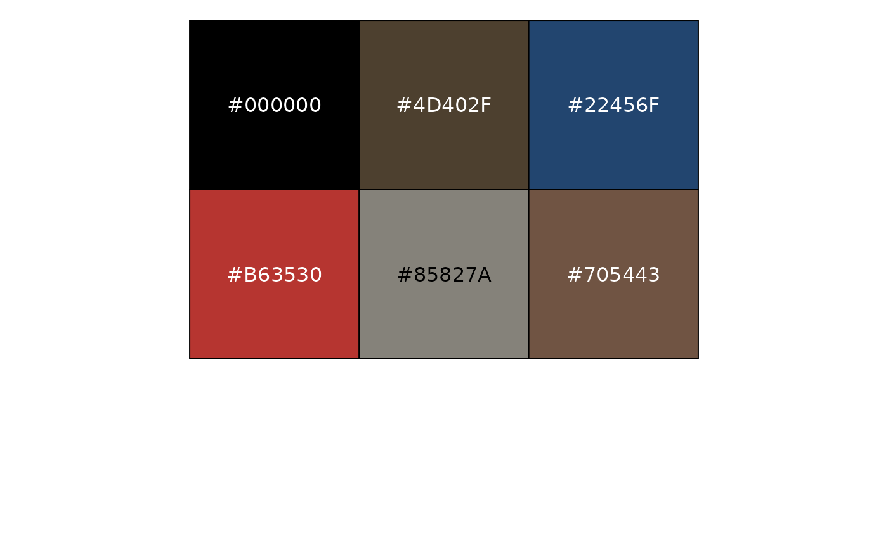

A collection of colour palettes which mirror the colour schemes available in GraphPad Prism.
prism_colour_pal(palette = "colors")
prism_color_pal(palette = "colors")string. Palette name, use
lengths(ggprism_data$colour_palettes) to show all valid palette names
and their number of values each palette supports.
Returns a function which takes a single integer as its only argument and returns a character vector of hexadecimal colours. See the examples below for usage.
library(ggplot2)
## list all available colour palettes and their lengths
lengths(ggprism_data$colour_palettes)
#> autumn_leaves beer_and_ales black_and_white blueprint blueprint2
#> 9 9 9 9 9
#> blueprint3 candy_bright candy_soft colorblind_safe colors
#> 9 9 9 6 20
#> diazo earth_tones evergreen fir fir2
#> 9 10 9 9 9
#> fir3 flames flames2 floral floral2
#> 9 9 9 12 12
#> greenwash inferno magma mustard_field mustard_field2
#> 10 6 6 9 9
#> muted_rainbow neon ocean ocean2 ocean3
#> 10 9 9 9 9
#> office pastels pearl pearl2 plasma
#> 9 9 6 6 6
#> prism_dark prism_dark2 prism_light prism_light2 purple_passion
#> 10 10 10 10 9
#> quiet quiet2 shades_of_gray spring spring2
#> 9 9 9 9 9
#> stained_glass stained_glass2 starry starry2 summer
#> 9 9 5 5 10
#> sunny_garden sunny_garden2 sunny_garden3 the_blues viridis
#> 9 9 9 9 6
#> warm_and_sunny warm_pastels warm_pastels2 waves waves2
#> 9 9 9 5 5
#> winter_bright winter_soft wool_muffler wool_muffler2 wool_muffler3
#> 9 9 9 9 9
## select some colours from a palette
prism_colour_pal(palette = "starry")(4)
#> [1] "#000000" "#042E3D" "#765A22" "#44726D"
## see all the colours in a specific palette
# define a function for convenience
library(scales)
show_palette <- function(palette) {
scales::show_col(
prism_colour_pal(palette = palette)(
attr(prism_colour_pal(palette = palette), "max_n")
)
)
}
# show the colours in the palette "pearl"
show_palette("pearl")
